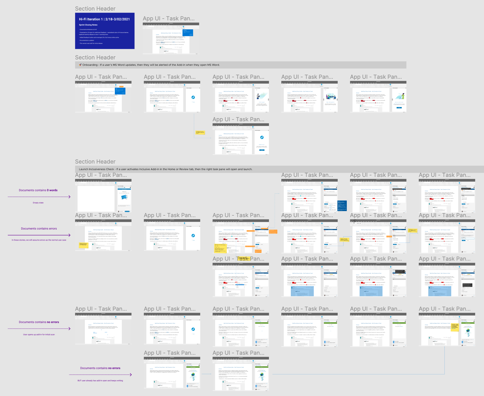

Project Details
Type: DEI, Writing Assistant, Microsoft Extension
Company: VMware
Platform: Desktop, Web
Duration: Dec 2020 - Ongoing
Team: 4 Engineers, 1 UX Designer
Tools: Figma, Dovetail, Microsoft Fluent Toolkit, Microsoft Word, VMware Horizon Client, Google Analytics, Jira
Summary
As a building response to the 2020 Black Lives Matter movement, colleagues across VMware formed the Inclusive Terminology Initiative, now part of DEI, to change the way we talk about tech. Our team was tasked to create internal Microsoft Office Add-ins to automatically review and replace insensitive terms to aid content writers in this effort.
This case study will be primarily focusing on our first installment for Microsoft Word.
Background
In light of events such as the Black Lives Matter Movement of 2020 which struck a momentum for , VMware’s Diversity, Equity, & Inclusion (DEI) committed to taking steps forward. Colleagues and LT representatives from across BUs, took part in the Inclusive Terminology Initiative to vet the day-to-day technical language used in the industry that is considerably rooted in racist, genderist, discriminatory or non-inclusive.
This movement wasn’t unique at all to VMware. It was a tech-wide reaction. Figma renamed “Master” to “Main” components,
GitHub removed coding terms like 'master' and 'slave', Chromium's documentation instead calls for "racially neutral" language, and many more companies followed steps.
Once the initiative was announced, VMware content creators manually audited their files through cmd/ctrl+F on autopilot or configuring their own writing assistant tool, on the brink of expiring, to review for them. It was an abrupt company intranet page tabling what words to remove and better alternatives instead.
As a solution, our team took part in the technical side of the initiative to build an internal writing assistant add-in for Microsoft Office to detect potential errors in problematic terminology in our content. This would automatically be installed in all VMware machines within a click of an update.
As a super collaborative approach, I touched base with engineers, leadership, and potential users at every turn to make sure the effort was technically viable within Microsoft’s constraints but also represents the high-level effort to build a more inclusive and diverse workplace.
“This is an effort to change our standard product, services, and marketing terminology with more inclusive language…New terminology will impact our software code, manuals, sales materials, Knowledge Base articles, partner communications, marketing materials, and other written communications.”
🚩 Problem
How can we educate colleagues to be more mindful and inclusive in their content?
High-level Goals
- Educate colleagues as to why some words in their content may be non-inclusive.
- Review content for non-inclusive terms validated by the etymology team.
- Suggest alternative words and allow other suggestions.
Main Challenges
😬 Preparing for a reactionary audience
Though it wasn’t in our scope to be part of the leadership decisions around the initiative, we were aware not all colleagues would accept using the add-in or embrace the initiative’s intents with an open mind. Unfortunately, the original Confluence page announcing tech documentation to retro non-inclusive terms caused a stir in the comments that it had to be archived, how couldn’t we expect the same with the announcement of our add-ins?
😔 Working with Microsoft’s constraints
For each step of the project from gathering requirements to design, every “nice-to-have” idea was blocked by the limits of Microsoft’s SDK that were met with trade-offs.
Research
Validating the problem
Was a UI to this problem even needed? We were weary to be optimistic about the deliverable. Our engineers were skeptical of the need for this solution, which was where I conducted interviews with VMware content creators and writers to access their processes and pain points. Our scope was on a global audience for AMER, EMEA, and APJ.
When the initiative kick-started, I found that VMware writers had to do damage control with past and current document content. In the initial user research, we found colleagues were doing ctrl/cmd+F for each non-inclusive word on the terminology list by muscle memory! At the same time, they had the list open on another tab or monitor to check the recommended alternatives. Now, repeat this with hundreds of documents going from one page to over a hundred then times that with thousands of colleagues.
On a higher level issue, Acrolinx was the official writing assistant tool that was on the brink to cease as the multi-million dollar licensing and need for Acrolinx engineers proved too costly to maintain.
Designs

We used Microsoft Fluent’s Design System and VMware Clarity Core’s color palette and illustrations.
As we prepared for the launch along with our other stakeholders such as Employee Comms, it was imperative that this add-in had to be accessible. How unjustified would it be if DEI announced a tool representing inclusion while singling out folks with disabilities?
So along with all my other projects, this had to be reviewed by our accessibility team, but unlike those other comprehensive projects, this was audited not once, but twice! I’m proud of the collaboration between our engineers to commit to achieving an A+ rating in accessibility before deploying this companywide. A big win was that having a process beyond rectifying a11y Jira issues incited curiosity and eagerness from our engineers to care about a project’s accessibility.
Usability Tests
With Figma's new feature (at the time) of setting multiple flows in prototypes, this made designing for remote user testings more interactive and less of a chaos in the back end.
Outcome
Validating the problem
Unbelievably, my smallest project had the biggest impact on the VMware community but also myself.
If you look through the work our teams do, they’re complex or fun yet familiar. Application-wise, we cover management dashboards, intranets, communication, and collaboration tools with an ongoing pile of features. An add-in that deals with inclusivity — almost out of the spectrum. Okay, sure, it’s along the lines of productivity but still! It was an obstacle yet a rewarding one to venture out and build for social impact this time.
I can’t stress this enough, but working on this project deserves a whole standalone blog post focusing more on the social impact of inclusive language in tech itself. Initially, I was skeptic if colleagues would truly understand the importance of inclusive language -- jumping into tech from my activist days almost numbed me to go “Hey guys” again. Another story.
The initial user research with stakeholders and potential users was a huge motivation to push through. Once we gathered how and why this Inclusive Terminology Initiative came to be even outside VMware, we became more omniscient of our efforts and value of the add-in.
The exciting, rewarding part that live on is seeing this used not only for the sake of being used but because it means that our colleagues out there are putting the effort in creating inclusive content and they’re supporting the heart of our EPIC2 values in praxis. Good stuff.
The importance of inclusive language in tech, something at its heart started white, cis-gendered, heteronormative, and male-dominated had its impetus for change in renaissance of a movement, but I dearly hope this isn’t temporary.